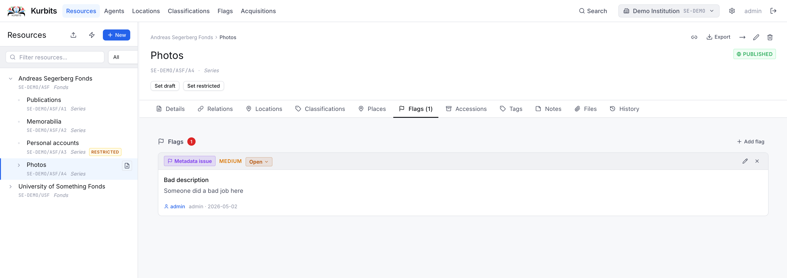
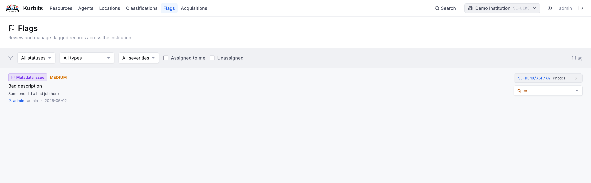

Flags
Flags are internal workflow markers placed on resources that require attention. A flag might indicate a metadata problem, a conservation issue, an unresolved rights question, or anything else that needs to be acted on.
Flags are visible both on the individual resource and on the institution-wide Flags page.
Flag types
| Type | Use |
|---|---|
| Metadata | Missing, incorrect, or incomplete descriptive information |
| Conservation | Physical condition concerns |
| Digitisation | Queued for or blocked from digitisation |
| Rights | Copyright, licensing, or access restriction questions |
| Access | Access control issues |
| Duplicate | Suspected or confirmed duplicate record |
| Other | Any other issue |
Severity levels
Each flag has a severity: Low, Medium, or High. Use severity to indicate urgency and to prioritise work.
Flag status
| Status | Meaning |
|---|---|
| Open | Issue identified, not yet being worked on |
| In progress | Actively being addressed |
| Resolved | Issue closed |
Adding a flag to a resource
Open the resource and go to the Flags tab. Click + Add flag, choose a type and severity, write a description of the issue, and optionally assign it to a colleague.

The Flags page
The Flags page gives an institution-wide view of all open flags.

Use the filter buttons to show: - All open flags - Assigned to me — flags assigned to your user account - Unassigned — flags not yet assigned to anyone
Click any flag row to navigate to the resource it belongs to.
Resolving a flag
Open the flag (either from the resource's Flags tab or from the Flags page), change the status to Resolved, and save. Resolved flags are hidden from the default view but remain in the record.